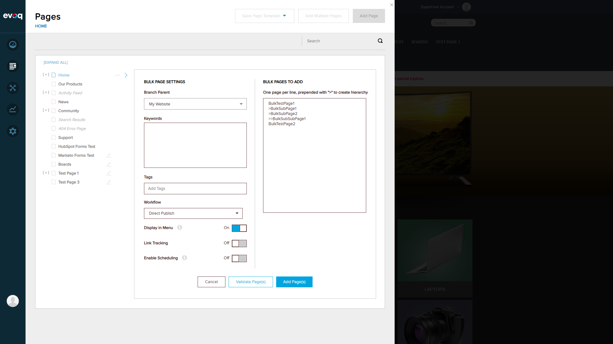
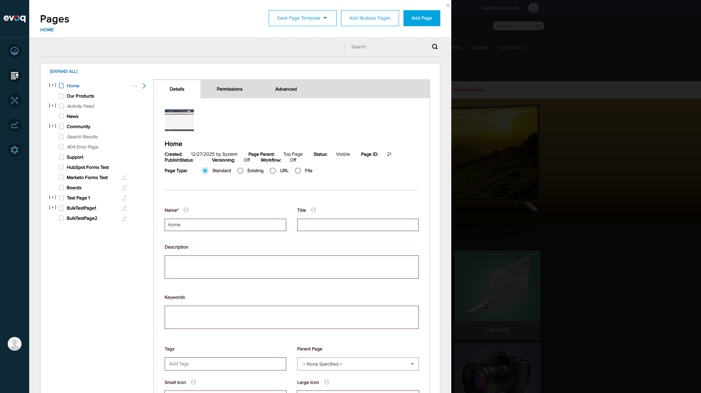
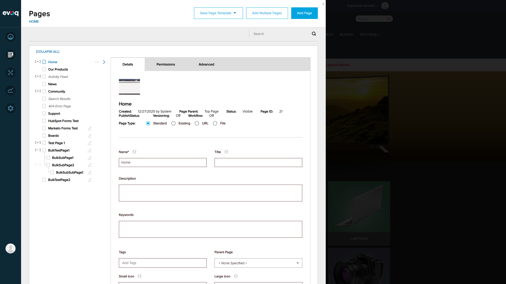

PASS Test Case 1: Validate Bulk Pages Before Creation
Description: Verify that bulk pages can be validated before actual creation to check for errors.
Steps Performed:
- Logged in as superuser (host/Pass123456)
- Navigated to Content > Pages in PersonaBar
- Clicked "Add Multiple Pages" button
- Entered 5 test pages with hierarchy:
BulkTestPage1
>BulkSubPage1
>BulkSubPage2
>>BulkSubSubPage1
BulkTestPage2
- Clicked "Validate Pages" button
- Verified validation success message appeared

Add Multiple Pages dialog opened

5 pages with hierarchy entered in the dialog

Validation successful - all 5 pages passed validation
Observations:
The validation correctly parsed the hierarchy notation and validated all 5 pages. The ">" prefix system works correctly for creating nested page structures.
PASS Test Case 2: Create Multiple Pages Successfully
Description: Verify that multiple pages with hierarchy can be created in a single batch operation.
Steps Performed:
- After validation success, clicked "Add Pages" button
- Verified success message showing all 5 pages created
- Closed the dialog
- Expanded the page tree to verify hierarchy
- Confirmed all pages exist with correct parent-child relationships

All 5 pages created successfully

Page hierarchy expanded showing correct parent-child structure
Observations:
The bulk page creation successfully created all pages with the correct hierarchical structure:
- BulkTestPage1 (root level)
- BulkSubPage1 (child of BulkTestPage1)
- BulkSubPage2 (child of BulkTestPage1)
- BulkSubSubPage1 (grandchild - child of BulkSubPage2)
- BulkTestPage2 (root level)
PASS Test Case 3: Duplicate Page Name Handling
Description: Verify that the system correctly detects and reports duplicate page names.
Steps Performed:
- Opened Add Multiple Pages dialog
- Entered pages including:
- "Home" - an existing page in the system
- "DuplicateTest" - entered twice to test in-batch duplicate detection
- Clicked "Validate Pages" button
- Verified error messages appeared for duplicate pages

Test input with duplicate page names

Validation correctly detected duplicate page names
Observations:
The system correctly identified two types of duplicates:
- Existing page duplicate: "Home" was flagged as it already exists in the system
- In-batch duplicate: "DuplicateTest" was entered twice and flagged as duplicate
Error message displayed: "A page with that name has already been added."
PASS Test Case 4: Validation Errors (Invalid Hierarchy)
Description: Verify that validation correctly catches invalid page hierarchy structures.
Steps Performed:
- Opened Add Multiple Pages dialog
- Entered pages with invalid hierarchy:
>InvalidChildPage
>>InvalidGrandChild
(Starting with child page without parent)
- Clicked "Validate Pages" button
- Verified appropriate error message appeared

Validation error: "No parent page supplied" for orphaned child pages
Observations:
The system correctly detected the invalid hierarchy and displayed "No parent page supplied" error. This validates that:
- Child pages (with ">" prefix) cannot be created without a parent page
- The validation logic properly traverses the hierarchy structure
- Clear error messages are provided to guide users
PASS Test Case 5: Parent Page Assignment
Description: Verify that pages can be created under a specific existing parent page.
Steps Performed:
- Opened Add Multiple Pages dialog
- Selected "News" as the parent page from dropdown
- Entered child pages:
NewsChildPage1
NewsChildPage2
- Validated and created the pages
- Expanded News page to verify children were created correctly

News selected as parent page for new child pages

Child pages created successfully under News parent

News page expanded showing new child pages
Observations:
The parent page assignment feature works correctly:
- Dropdown allows selection of existing pages as parent
- New pages are correctly created as children of the selected parent
- The page tree correctly shows the parent-child relationship
Conclusion
All 5 test scenarios for the Bulk Page Creation feature passed successfully. The feature correctly:
- Validates pages before creation to catch errors early
- Creates multiple pages with proper hierarchical structure using the ">" prefix notation
- Detects duplicate page names (both existing pages and in-batch duplicates)
- Validates hierarchy structure and reports "No parent page supplied" for orphaned child pages
- Allows creation of pages under a specific existing parent page
The feature is working as expected based on the code implementation in EvoqPagesController.cs and EvoqBulkPagesControllerImpl.cs.